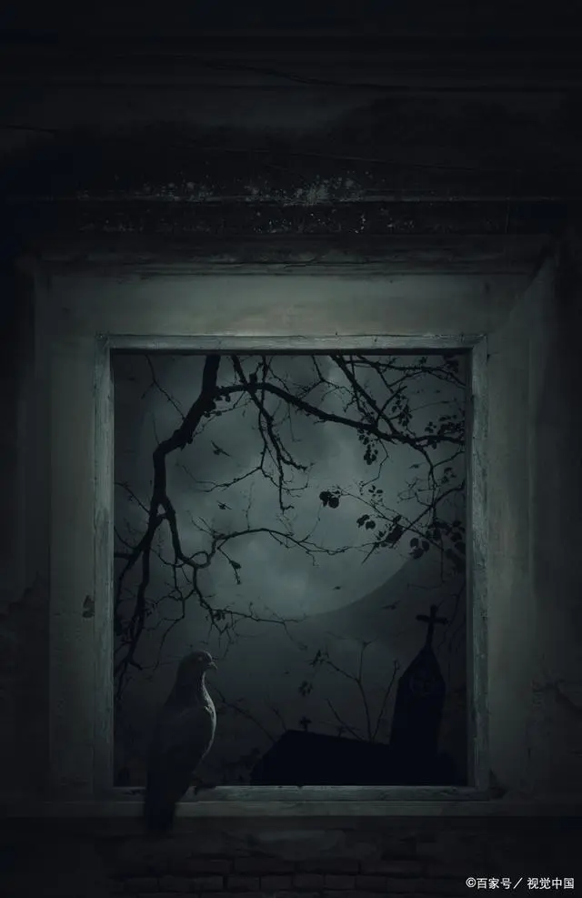
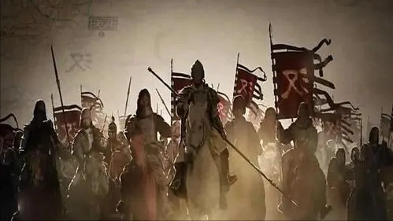

- 王梓钧朕
开局主角赵瀚穿越崇祯元年成一逃荒人家的二子，大哥病饿而死，父母被马匪杀死，姐姐自愿卖身，只有一个年幼的妹妹在身边，自己也是重病未愈。
路遇费家主仆，进入静海县城。赵瀚献策知县，助其破贼军踏破天，得费映环赏识，收为义子。
一般义子实为家仆，但赵瀚不是。本打算待年龄更大、大明更乱之际，以此地为基起事。后因被陷害，火烧衙门逃离，从此踏上造反生涯。

- 榴弹怕水绍宋
主角穿越成大宋皇帝赵构，这时北宋灭亡，靖康之耻已经发生。
并且前身上位的三个月时间里，李纲罢相，陈东被杀，岳飞被驱逐出军，宗泽被遗弃东京，河北抗金布置被全面裁撤，准备迁都南方，成立南宋。
主角穿越过来面临留下的一堆烂摊子，从开始的迷茫到逐步融入封建皇权。

- 孑与2唐砖
主角穿越到了唐朝贞观之治刚开始的年代成了一个十四五岁的少年，身处大唐的西北某地，并且随身携带的手机、玉米种子、土豆等现代物品也跟着穿越过去了。
并在西北遇到了大唐军队，结识了程咬金的儿子，靠着自己的能力得到了程咬金的赏识，并且通过程咬金得到了李世民的认同。
运用前世知识伪造传承底蕴，盗用先祖名讳认祖归宗落户长安，混到了唐朝的官员行列。

- 七月新番秦吏
主角本是警校毕业的学生，因救一个落水的小男孩穿越成秦朝那个写家书的小兵（黑夫）身上。
黑夫从一名底层小吏起步，依靠抓捕盗贼升级为公事，随后考核当上了亭长，之后一路破案立功。
在到后面累积军功，借着秦军中赏罚严明，封侯做到了“忠武侯”。
但随着秦始皇驾崩，秦二世与赵高阴谋夺权，主角假死脱身，暗中蛰伏。